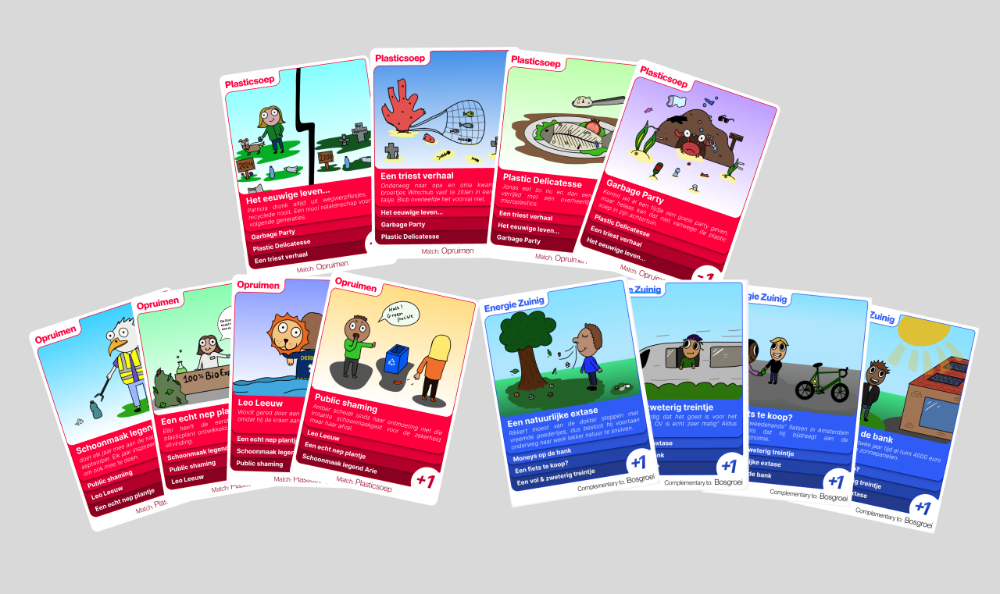

Informatie
Mijn rol: Visual designer
Groepsproject, 4 personen
Duur: periode van 3 weken
Vak: Passie project, leerjaar 1 CMD
Mijn rol: Visual designer
Groepsproject, 4 personen
Duur: periode van 3 weken
Vak: Passie project, leerjaar 1 CMD
Los van de gezamenlijke brainstormsessies waren mijn taken:
De opdracht van dit project was om een product of ervaring te maken en ontwerpen die van toegevoegde waarde is voor de wereld.
Het doel van onze groep was om een spel te creëren wat mensen zich bewust maakt van vervuiling en andere ecologische waarden.
Pollution party is uiteindelijk een kaartspel geworden waarbij mensen bewust worden gemaakt van vervuiling. Werking van het spel: Het werkt als kwartet, maar heb een hele reeks aan vervuilende sets en schoonmaak sets. Deze staat complementair aan bepaalde onderwerpen. Elke set heeft zijn eigen plus of min punten, waardoor je de ander een set kan geven die vervuilend is en zij minpunten krijgen.
We hebben tijdens het proces veel iteraties gemaakt, we waren bijvoorbeeld in eerste instantie van plan om er een bordspel van te maken, alleen omdat we de link tussen de kaarten en het bord niet goed op orde konden krijgen hebben we het bord weggelaten.
Het project bestond uit sprints. Zo bestond week 1 uit vooronderzoek, week 2 uit prototype en testen, en week 3 de afronding
Tijdens deze opdracht hebben we veel vooronderzoek gedaan naar wat voor spelletjes er allemaal zijn en wat maakt het dat zij zo goed zijn. Omdat wij iets wilde maken wat nog niet bestond. Daarvoor hebben we veel brainstorm sessies gehouden.
Uiteindelijk hadden we een idee alleen we kwamen er ook niet helemaal uit de spelregels en hoe de kaarten gecombineerd moesten worden met het bordspel, dus hadden we besloten om over te stappen naar alleen een kaartspel
We hadden eerst een low-fidelity kaarten gemaakt, zodat wij ons concept konden gaan testen
Hier bleek uit dat de gehele puntentelling nog niet klopte, of je de kaarten meteen op moest leggen, de naam van de kaartset stond er niet op.
Dit waren allemaal cruciale inzichten om het spel wel goed te kunnen laten lopen.
Een aantal schetsen om de ideeën die ik had voor de kaarten duidelijk te kunnen aantonen aan mijn groepsgenoten.

Dit zijn de kaarten uit het spel die ik uiteindelijk heb geïllustreerd
Uiteindelijk hebben we het gehele project afgesloten met een markt waarin je voor een laatste keer je gemaakte product kon gaan testen.